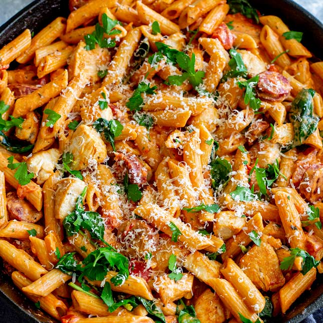

Avery's Specialty

Description
Avery has been making this dish for years now, constantly trying new things, and always making use of whatever she has on hand. But regardless of what goes in, it tastes like love, every single time.
Ingredients
- Noods
- Toms
- Bacon
- Parsley (For dish and garnish)
- Garlic
- Lemon
- Artichoke
- Cheese
- Half & Half (Pour with love- about a 1/2 cup)
- Salt (Take it easy)
- Red Peppers (1 full Dominoes pack)
- Tomato Paste (A quarter sized squeeze)
- Butter/Oil (Just for pan coverage)
Instructions
- Dice bacon and pan fry on high until crisp- drain as needed.
- Boil water while bacon cooks.
- Prep fresh ingredients- tomatoes, parsley, cut lemon in half, garlic, artichoke, and literally whatever else we may have. Set aside.
- Cook noodles for 7 minutes- they will be al dente.
- Add garlic and saute in pot until aromatic, then add the remaining fresh ingredients.
- Let ingredients saute for a couple minutes, letting everything break down a bit.
- Add salt, half & half, peppers, tomato paste, squeezed lemon, and cheese.
- Add noodles.
- Add bacon.
- Serve with love.